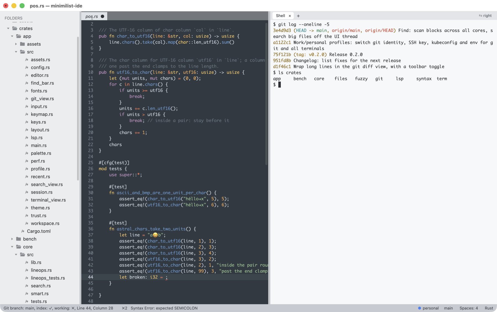

Terminal
Real terminal sessions in a panel you can dock anywhere.


Sessions
Press ⌃` to show the panel; the first press starts a shell in your project folder. Press ⌘⇧T to start another session from a profile. Each session is a tab with a close button, and the tab shows the title the program sets.
- Closing a session that is still running asks for a second ⌘W, so you do not end a long task by accident.
- A session whose program exits cleanly closes itself; a failing one stays so you can read what happened.
- Closing never freezes the app, even if the program ignores the hang-up signal: it is stopped after 1.5 seconds.
Dock it where you want it
Drag the panel's header toward an edge of the window; the bottom, left and right zones light up. Or use the dock button in the header, or "Terminal: Dock Left" in the command palette. Drag the divider to resize. The layout is saved in ~/.config/mide/layout.toml.
Mouse, keyboard and scrollback
- The wheel scrolls the history of ordinary output, and a pill shows how far up you are. Click it, press any key, or press ⇧End to return.
- Programs that ask for the mouse (vim, tmux, htop, full-screen AI tools) get real wheel, click and drag events. Hold ⇧ to select text instead.
- Full-screen programs without mouse support, such as
less, get arrow keys from the wheel. - ⇧PgUp, ⇧PgDn, ⇧Home, ⇧End browse scrollback. ⌘C and ⌘V copy and paste, with bracketed paste support. Double and triple click select a word and a line.
Profiles
A profile is a way to start a session. Three exist from the start:
| Profile | Runs |
|---|---|
Shell | Your login shell. |
Claude | claude, listed when Claude Code is installed. |
Copilot | copilot, or gh copilot as a fallback. Always listed. |
Commands run through your login shell, so they see the same PATH as in Terminal.app, including tools from nvm, Homebrew or ~/.local/bin. mide asks your login shell once, in the background, which tools you have.
GitHub Copilot
Install the Copilot CLI once, then pick Copilot in ⌘⇧T, or choose "Terminal: New Copilot Session" in the command palette. The first time, run /login inside it.
npm install -g @github/copilot # or: brew install copilot-cliIf nothing is installed, the session prints these instructions instead of failing silently.
Your own profiles
Add profiles in ~/.config/mide/config.toml. A profile with the same name replaces a built-in one.
[[terminal.profile]]
name = "Claude"
command = "claude"
cwd = "." # relative to the project folder
env = { ANTHROPIC_MODEL = "claude-opus-5-5" }
[[terminal.profile]]
name = "Python"
command = "zsh"
args = ["-c", "source .venv/bin/activate && exec zsh"]
[project]
open_terminals = ["Shell", "Claude"] # started when a folder opensSaving the file reloads it. Every profile also appears in the command palette as "Terminal: New ... Session".
Project folders and trust
A project can have its own .mide/config.toml. Because terminal profiles and auto-started sessions run commands, they are ignored in a project until you trust the folder. Opening a repository you just cloned never runs its commands.
When a project defines commands, mide tells you and waits. Run "Workspace: Trust This Folder" in the command palette to enable them. Trust is remembered in ~/.config/mide/trusted.txt and covers the folder and everything inside it. Your own ~/.config/mide/config.toml is always trusted.
Harmless project settings, such as fonts, apply whether or not the folder is trusted.
Colors and fonts
The terminal follows the app theme (light terminal in the light theme, dark in the dark theme) and uses the same font as the editor unless you set one in [terminal].